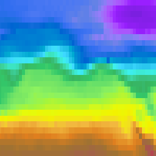

Gridded Data Renderer#
PAVICS uses THREDDS WMS service to render netCDF data on a map canvas. The WMS GetMap operation passers the layer identification (<variable name>), styles, figure size and format, projection and color range and the server returns an image that can be displayed in a figure or a map canvas.
from IPython.display import Image
from owslib.wms import WebMapService
server = "https://pavics.ouranos.ca/twitcher/ows/proxy/thredds/"
path = "/birdhouse/testdata/flyingpigeon/cmip5/tasmax_Amon_MPI-ESM-MR_rcp45_r2i1p1_200601-200612.nc"
wms = WebMapService(server + "wms" + path, version="1.3.0")
resp = wms.getmap(
layers=["tasmax"],
format="image/png",
colorscalerange=f"{250},{350}",
size=[256, 256],
srs="CRS:84",
bbox=(150, 30, 250, 80),
time="2006-02-15",
transparent=True,
)
Image(resp.read())
---------------------------------------------------------------------------
ModuleNotFoundError Traceback (most recent call last)
Cell In[1], line 2
1 from IPython.display import Image
----> 2 from owslib.wms import WebMapService
4 server = "https://pavics.ouranos.ca/twitcher/ows/proxy/thredds/"
5 path = "/birdhouse/testdata/flyingpigeon/cmip5/tasmax_Amon_MPI-ESM-MR_rcp45_r2i1p1_200601-200612.nc"
ModuleNotFoundError: No module named 'owslib'
One issue with the figure above is the colorscale range and the colormap, which do not provide a lot of contrast. So lets get a copy of the data using the OPeNDAP protocol to find the actual minimum and maximum values.
import xarray as xr
ds = xr.open_dataset(server + "dodsC" + path)
subtas = ds.tasmax.sel(
time=slice("2006-02-01", "2006-03-01"), lon=slice(188, 330), lat=slice(6, 70)
)
mn, mx = subtas.min().values.tolist(), subtas.max().values.tolist()
mn, mx
(235.5495147705078, 306.79168701171875)
Now we’ll simply pass those min/max to getmap with the colorscalerange parameter, and change the palette in the same go using the styles parameter. The supported styles are stored in the layer’s metadata.
sorted(wms.contents["tasmax"].styles.keys())
['boxfill/alg',
'boxfill/alg2',
'boxfill/ferret',
'boxfill/greyscale',
'boxfill/ncview',
'boxfill/occam',
'boxfill/occam_pastel-30',
'boxfill/rainbow',
'boxfill/redblue',
'boxfill/sst_36']
resp = wms.getmap(
layers=["tasmax"],
styles=["boxfill/occam"],
format="image/png",
colorscalerange=f"{mn},{mx}",
size=[256, 256],
srs="CRS:84",
bbox=(150, 30, 250, 80),
time="2006-02-15",
transparent=True,
)
Image(resp.read())
